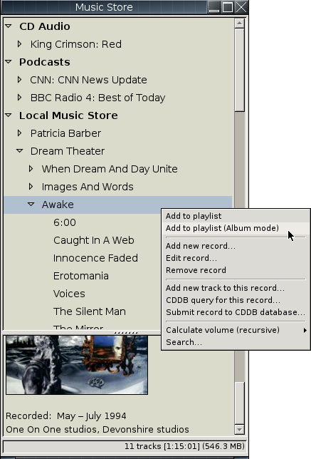
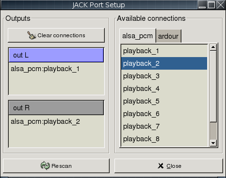

![[screenshot]](main.png)
Copyright © 2006-2010 Peter Szilagyi
Permission is granted to copy, distribute and/or modify this document
under the terms of the GNU Free Documentation License, Version 1.2
or any later version published by the Free Software Foundation.
Generated on Tue Jun 3 16:07:18 UTC 2014
Aqualung is an advanced music player originally targeted at the GNU/Linux operating system, today also running on FreeBSD, OpenBSD and Microsoft Windows. It plays audio CDs, internet radio streams and podcasts as well as soundfiles in just about any audio format and has the feature of inserting no gaps between adjacent tracks. It also supports high quality sample rate conversion between the file and the output device, when necessary.
Audio CDs can be played back and ripped with on-the-fly conversion to WAV, FLAC, Ogg Vorbis or CBR/VBR MP3 (gapless via LAME). Seamless tagging of the created files is offered as part of the process. Internet radio stations streaming Ogg Vorbis or MP3 are supported. Subscribing to RSS and Atom audio podcasts is supported: Aqualung can automatically download and add new files to the Music Store. Optional limits for the age, size and number of downloaded files can be set.
Almost all sample-based, uncompressed formats (e.g. WAV,
AIFF, AU etc.), as well as files encoded with FLAC (the Free
Lossless Audio Codec), Ogg Vorbis, Ogg Speex, MPEG Audio
(including the infamous MP3 format), MOD audio formats (MOD,
S3M, XM, IT, etc.), Musepack and Monkey's Audio Codec are
supported. Numerous formats and codecs are also supported via
the FFmpeg project, including AC3, AAC, WMA, WavPack and the
soundtrack of many video formats. There is also a native
(non-FFmpeg) WavPack decoder. The program can play the music
through OSS, ALSA, sndio, PulseAudio, the JACK Audio Connection
Kit, or even using the Win32 Sound API (available only under
Cygwin or native Win32). Depending on the compile-time options,
not all file formats and output drivers may be usable in a
particular build. Type aqualung -v to get a list of
all the compiled-in features.
Aqualung supports the LADSPA 1.1 plugin standard. You can use any suitable plugin to enhance the music you are listening to.
Other features of the program are: tabbed playlist, internally working volume and balance controls (not touching the soundcard mixer), multiple skin support, random seeking during playback, track repeat, list repeat and shuffle mode (besides normal playback). In track repeat mode the looping range is adjustable. Aqualung will come up in the same state as it was when you closed it, including playback modes, volume and balance settings, currently processing LADSPA plugins, window sizes, positions and visibility, and other miscellaneous options. Aqualung has the ability to display and edit Ogg Xiph comments, ID3v1, ID3v2 and APE tags, as well as FLAC picture frames found in files that support them. See the section about metadata support for full reference.
The method of assembling the title string of a track is programmable (via a user-provided Lua function) and can include nearly any metadata item or audio file attribute. See the documentation of the Lua extension file config setting for full reference.
You can control any running instance of the program remotely from the command line (start, stop, pause etc.). Remote loading or enqueueing soundfiles as well as complete playlists is also supported.
In addition to all this, Aqualung provides a so-called Music Store that is an XML-based music database, capable of storing various metadata about music on your computer (including, but not limited to, the names of artists, and the titles of records and tracks). You can (and should) organize your music into trees of Artists/Records/Tracks, thereby making life easier than with the all-in-one Winamp/XMMS playlist. Importing file metadata (ID3v1, ID3v2 tags, Ogg Xiph comments, APE metadata) into the Music Store as well as getting track names from a CDDB/FreeDB database is supported. For audio CDs, CD-Text retrieval is also implemented.
If you'd like to get your hands on the program quickly rather than to spend your evening reading the rest of the manual, here is the absolute minimum you need to know to successfully use the program. So make sure to read this (deliberately short) chapter, and come back for the rest when you have questions while using the program. Ultimately, you may ask questions on the aqualung-friends mailing list.
It is not hard to get Aqualung up and running on your machine, although for beginners the number of compile-time options might be intimidating at first. The steps you need to take depend on the platform and operating system you use. For detailed information please look at the relevant page of the Aqualung website.
In case you are not used to compiling software yourself,
you may check whether there is a distribution-provided package
of Aqualung. Installing such a package is generally the
easiest and fastest way to get Aqualung, however this way you
won't be able to try the latest features. Currently there are
Aqualung packages for major Linux distributions such as Debian, Gentoo,
SuSE, etc. as well as
FreeBSD. If your distribution lacks such a package,
consider contacting the organization maintaining the
distribution and ask them to provide a package of
Aqualung. Anyway, you might have to compile Aqualung from
source. This is not very hard, either – the
configure script tries to adapt Aqualung to your
system as much as possible without breaking the program. See
the above website for more information.
On Microsoft Windows, all you have to do is download and run the self-extracting installer utility, which guides you through a few easy to follow steps and installs the program on your machine. Make sure to visit this page for more information about the Windows version of Aqualung.
Aqualung has a large number of configuration settings, which are adjustable through the user interface at run-time (no need to edit config files by hand), and are remembered across multiple invocations of the program. When Aqualung starts for the first time, it creates a configuration based on some wired-in defaults. A good way of exploring the program's capabilities is poking through the configuration area. You can access this by clicking in the main window with the right mouse button, which will pop up the program's main menu. Choosing Settings from the menu will open the configuration dialog.
In fact, clicking with the right mouse button almost anywhere is a generally smart idea. Aqualung has lots of context-sensitive popup menus in the Music Store, the Playlist (often embedded in the main window) and elsewhere. It's good to keep this in mind when taking the explorative approach instead of reading the whole manual right away.
Let's add some music to the Playlist and start playback right away. Right-click the Add files button, and choose Add directory from the menu. (The right-clicking trick works for the other two buttons as well. Left-clicking is a shortcut to immediately execute the action denoted by the button's caption.) Choose a directory with some music under it. It's OK to have subdirectories under this directory, the program will search for playable files recursively. After the Playlist starts to get populated with tracks, press play, or double-click on one of the tracks to play. Press `i' to see metadata information about the selected track.
Now that you have some music playing, let's get more organized. In the Music Store window click in the empty area with the right mouse button and choose Create empty store... from the menu. Enter a meaningful name such as `Tom's Music' and choose a location to save the XML file of the store to. This should be a writable location, so it is wise to stick to a location inside your home directory. (A system-wide path or a remote NFS mount with read-only access won't do.)
You can have any number of such stores in the Music Store organizer, and it is indeed a great idea to have separate stores for music differentiated by origin, genre, or some other aspect. One great use is multiple stores with the actual music files stored on multiple remote machines, one store for each machine. Or just a store for your local music and another for files on your bedroom file server box. There are several possibilities.
But how do you populate the store with music you already have on your drive? It's easy if your music is stored in an organized manner on the filesystem level. As a minimum, this means that tracks intended to go into one store are found under a common root directory in the filesystem (there may be several directory layers down from the root to the individual files, but there must be a common ancestor). In this case the so-called Music Store Builder will take care of things for you. Right-click on your newly-created empty store and choose Build / Update store from filesystem. Choose Independent mode and in the dialog you get, enter the root directory under which your collection resides. As you can probably guess at this point, the store builder interface is pretty flexible, however the default settings should be good to get something together quickly without further hassle.
Pressing OK will start the process, during which the directory structure below the root you specified will be traversed. The artist/record/track names are determined from potentially multiple data sources (CDDB, metadata e.g. ID3v2 tags or Ogg Xiph comments, and filesystem names). The logic involved is fairly elaborate. You are strongly advised to read the detailed usage instructions for the Music Store Builder.
You can play CDs with Aqualung easily. Just put the CD in one of your CD drives, and if everything goes well, Aqualung will detect it, do a CDDB lookup to retrieve artist, record and track info (CD-Text is also used if the CD has it), and make it available to you through the special Music Store node called `CD Audio'.
You don't have to be happy with what you have so far. The Music Store paradigm is fairly addictive, as it's much easier to drop something into the Playlist from the Music Store than physically placing a CD in the drive. So as you keep expanding your CD collection, you will probably want to have those records in one of your music stores, too. In this case all you have to do is choose Rip CD... from the disc's popup menu, and supply some information. We won't go into details here (please refer to this section in case the interface is not obvious). However, it is worth stating that you should have a separate directory for the files of each record. Ripping multiple CDs into the same directory won't work.
aqualung --help
aqualung --version
aqualung [--output (jack|pulse|alsa|oss|sndio|win32)] [options] [file1 [file2 ...]]
Normally you should be able to start Aqualung without any options. This case the output device will be selected by probing for a usable driver (in order of JACK, PulseAudio, ALSA, OSS) with default parameters.
If no driver could be started with default
parameters, or you want to explicitly choose a suitable output
configuration, you have to tell the program which output
device to use. This is possible with the -o
(--output) option. There are specific optional
parameters for all five output drivers. You can also specify
which sample rate converter you want to use, or request a list
of available converters. You may also control another instance
of the program remotely, or add files to the Playlist.
-D, --disk-realtime
SCHED_FIFO) scheduling
for disk thread, a background worker thread doing file
decoding and sample rate conversion. Try this (and
optionally -Y) if you experience short audio
dropouts caused by other programs (e.g. web browser loading
a complex page).-Y, --disk-priority <int>
-D, set scheduler priority to
<int> (defaults to 1).-d, --device <name>
-r, --rate <int>
-b, --buffer-size <int>
-R, --realtime
SCHED_FIFO) scheduling
for ALSA output thread.-P, --priority <int>
--realtime, set scheduler
priority to <int> (default is 1 when -R is used).-d, --device <name>
-r, --rate <int>
-R, --realtime
SCHED_FIFO) scheduling
for OSS output thread.-P, --priority <int>
--realtime, set scheduler
priority to <int> (default is 1 when -R is used).-a[<port_L>,<port_R>],
--auto[=<port_L>,<port_R>]
-c, --client <name>
Note that in the case when JACK output has been selected
as part of the automatic output device detection, the
-a option is implicitly applied.
-r, --rate <int>
-R, --realtime
SCHED_FIFO) scheduling
for sndio output thread.-P, --priority <int>
--realtime, set scheduler
priority to <int> (default is 1 when -R is used).-r, --rate <int>
-s[<int>], --srctype[=<int>]
Note that remote controlling of instances is only possible if the instance you want to send a command to is running as the same user as you are when you issue the remote command.
-N, --session <int>
-L which defaults
to the present instance (so as to be able to start playback
immediately from the command line).-B, --back
-F, --fwd
-L, --play
-U, --pause
-T, --stop
-V, --volume [m|M]|[=]<val>
m/M means
mute; if = is present, the remote instance's
volume control will be set to the value specified,
otherwise, the volume will be adjusted by the supplied
(signed) value. The values are in dB units.-Q, --quit
You may specify filenames on the command line. These may be ordinary soundfiles playable by Aqualung, directories, or playlist files you saved earlier. The program will decide if a file is a playlist, and add its contents accordingly. In addition to Aqualung's native (XML) playlist format, the program will load M3U and PLS playlists whenever possible.
If you used the --session option (see above),
the files will be sent to the Aqualung instance you
specified. Otherwise a new instance will start up with the
files you specified. Note that if you enabled the Save
and restore the Playlist on exit/startup option in the
Settings dialog, the files you specify will be
loaded after the automatically loaded ones.
-E, --enqueue
-t[<name>], --tab[=<name>]
--session option, or at startup). If
--tab is used without the name parameter, the
files will be added to a new (untitled) tab. If a name is
supplied, Aqualung will check whether a tab with that name
already exists. If so, the files will be loaded (or enqueued
if you used -E) to that tab. If no such tab
exists, one with that name will be created, and the content
goes there.It is possible to set up a host program such as a browser, file manager etc. to use Aqualung for opening soundfiles. To do this, a command line with the following properties should be used:
One solution to this is to use
aqualung -N0 -E -L -t'File Manager' %swhere %s is one or more filenames. It should be noted
that the file associations (the mechanism of knowing which
files to open via Aqualung) is completely within the scope
of the host program.
-l [yes|no], --show-pl=[yes|no]
-m [yes|no], --show-ms=[yes|no]
$ aqualung -s3 -o alsa -R -r 48000 -d plughw:0,0
$ aqualung --srctype=1 --output oss --rate 96000
$ aqualung -o jack --auto=system:playback_17,system:playback_18
$ aqualung -o jack -a -E --tab="Led Zeppelin" `find ./ledzeppelin/ -name '*.flac'`
Aqualung obeys two environment variables concerning LADSPA plugins.
LADSPA_PATH
LADSPA_RDF_PATH
When any of these is not specified, the program will use sensible defaults and look in the obvious places.
Here is a list of files that Aqualung creates, reads and relies on.
You can control most of the program from this window. The cue controls in the bottom-left corner are fairly obvious. You can drag the large slider in the middle for seeking. There are two smaller sliders above that, the left one is for adjusting the volume and the right one for adjusting the balance. Above these, there are two horizontal text areas showing information about the currently playing track, and input/output parameters such as sample rate, mono/stereo, bitrate, output driver (e.g. OSS, ALSA, JACK) etc. The first trick to learn is that these lines are horizontally draggable with the mouse if the text does not fit in the available visible space. However, they don't scroll automatically, and for a very good reason.
In the upper left corner, you find one bigger and two smaller displays that show track times: elapsed time, remaining time and total track time. The big display also shows the current volume and balance setting when appropriate. By clicking in these displays, you can rearrange the displays as you want them. The following figure shows how the displays switch their contents after clicking into them with the left (L) or right (R) mouse button.

In the bottom right corner there are additional buttons. The buttons with the letters display or hide additional windows of the program:
| FX | Ladspa Patch Builder |
| MS | Music Store |
| PL | Playlist |
Note that depending on the skin, these buttons may come with images instead of the letters above. However, their functionality does not change.
The remaining three buttons are to select the playback mode. When none of these buttons is depressed, playback goes the normal way. The buttons are mutually exclusive, and select track repeat, list repeat or shuffle mode. I'm sure you can figure out which is which. If you select track repeat, a loop bar appears above the seek bar, with two markers. The markers can be dragged to select the looping range. When they are at the left and right end positions, the whole song is repeated. The looping range can also be selected using keyboard shortcuts. When track repeat is enabled and the current song is playing (or paused), `<' will set the start of the looping range to the current playing position; `>' does the same for the end of the looping range.
Volume and balance slider tricks:
An additional thing to know about the volume control is that it ranges up to +6 dB. This means you can send a bigger signal to the audio device than in the original file. With 0 dB corresponding to 100% signal level, +6 dB is almost exactly 200% signal level (and 4 times signal power as well). This means you can overdrive your output device, and since clipping will occur at 100% anyway, it will cause nasty digital distortion much worse than simple analog overdrive. If you have a track with a reasonably low level, you can go above 0 dB with the volume control. But today most CDs are mastered to keep the average volume level very close to the 0 dB (or 100%) top, and so they will likely distort with as little as +1 dB additional gain. The moral is: if you want it loud, turn up your external amp. You can also consider using RVA if the volume level of your tracks tends to vary in a wide range – see this section for details.
On a related note, another thing to watch out for is LADSPA plugins (in case you use them). It is very common that the signal level leaving a plugin is greater than the signal level the plugin gets on its input. So it is best to leave a few dB of headroom if you do that. A very typical case is boosting some frequency bands a few dB with an EQ plugin. You should decrease the overall volume level with as much dB as the largest boost (or even more), or you are risking that the signal will get chopped causing bad distortion. Alternatively, apply this limiter plugin as the last one in the processing chain, but only if you know what you are doing.
Right-clicking almost anywhere in the window will bring up a menu that allows access to the Settings dialog, the Skin Chooser, the JACK Port Setup dialog (present only when running the program with JACK output), and the About box. The latter may be useful to see which features have been compiled into the program. (If you haven't read the page about compiling yet: the configuration of the program can be adapted so as not to require certain libraries when compiling, and not provide certain features accordingly.)
![[screenshot]](playlist.png)
The Playlist normally receives its contents from the Music Store. However, you can put any file in the Playlist regardless of the contents of your Music Store, using the Add files button at the bottom of the window. Adding a directory or a URL are also supported, by right-clicking on the button and selecting the appropriate menu item, Add directory or Add URL.
The Add URL menu item can be used to listen to Internet radio stations streaming Ogg Vorbis or MP3. You will be shown a dialog with an entry, in which you should enter the URL of the stream. Pressing OK will add it to the Playlist. After you start playing the stream, the Playlist entry changes to the name of the radio station, with the description provided by the station in brackets.
The other two buttons (Select all, Remove selected) function as you would expect them when clicked with the left mouse button. Clicking with the right mouse button brings up popup menus that contain further options as seen with the Add files button.
There is a statusbar under the list showing the total time of the Playlist and the duration of the selected tracks, as well as the size of the songs (if enabled).
The Playlist can not only maintain a linear list of songs, but is also capable of keeping the tracks of albums together. This is done when a Store, Artist or Record has been added to the Playlist using the so-called Album mode, available from the popup menu in Music Store. If you tend to use it extensively, there is an option on the Settings / Playlist page to make it default, so drag & drop and adding via keyboard shortcut will use this mode automatically.
Aqualung supports playlist tabs, which allow you to have multiple playlists for your music at the same time, very similarly to multiple tabbed browsing in Firefox. Creating new tabs is possible via CTRL+T in the Playlist window, double-clicking on the tab bar, or using the right-click context menu of the tab labels. This context menu can also be used to rename tabs, close other tabs, or undo closing. Another trick is that middle clicking on an item in the Music Store adds the content to a new playlist tab, which will be named after the middle-clicked element by default. Closing a tab has several ways: clicking the close button located on each tab, middle-clicking on a tab, using the tab context menu, or by pressing CTRL+W in the Playlist window. Undo close tab is possible until you quit Aqualung. Tabs can be reordered via drag & drop.
The contents of the Playlist can be saved and restored automatically when the program exits and starts up, and/or periodically with adjustable interval. (Whether this should be done is a configuration option, covered later.) In addition to this, you can save the Playlist manually at any time, or load a previously saved playlist file. To do this, right-click in the Playlist area, which will bring up a popup menu with these features.
The Playlist is saved as an XML file, unless you specify a filename ending in .m3u, in which case it is saved in M3U format (one filename per line). When saving an XML playlist, you should normally end your filename with .xml – however, this is only good practice and not necessary. If you choose Save all playlists, the XML will be a multi-tabbed playlist, containing all tabs, while Save playlist saves the current playlist only. When saving all playlists, it will always use the XML format, as the M3U file format does not support multiple playlists. Note that the XML playlist file format is not compatible with Winamp/XMMS .m3u files. However, Aqualung will open playlists in M3U and PLS formats whenever possible.
When opening a multi-tabbed playlist, all opened tabs will be appended after the present ones, and the existing tabs will be remained intact, regardless of whether you chose loading (which normally clears the current playlist before adding) or enqueueing (which appends songs to the playlist). Opening any other playlist type (single XML playlist created by Save playlist, M3U or PLS playlists) will behave according to the option you chose (`Load in new tab', `Load' or `Enqueue').
The usual cut, copy and paste functions are accessible via keyboard shortcuts, and work across playlist tabs as well. Rearranging tracks by drag & dropping items is also supported. You can even drag a track from a playlist into another, by dragging on the tab first in order to switch to the target playlist. The only restriction is that album nodes cannot be pasted or dropped inside another album node.

The Music Store is a simple database of all your music. The central philosophy of this program is that you have a large storage (ideally an entire hard drive or a separate partition) to store all your music files. This is not necessary for the program to work. The audio files can be scattered around your system as long as you have read permissions to them. However, it is strongly recommended that you devote a separate directory for all the music (for example, /music would be a convenient place to store files that are owned by root, but readable by all users). Moreover, you can maintain several collections on different machines this way, and share them with other users via NFS, while keeping a (probably smaller) collection on your local hard drive.
In these central directories, create subdirectories for each artist you have CDs from. The directory names do not have to contain the exact names, you can for example create /music/ledzep for Led Zeppelin, /music/crimson for King Crimson, /music/hendrix for Jimi Hendrix and so on. In these directories, create subdirectories for each CD you have. Once again, the directory names for the records do not need to fully contain the record titles; they can be short and without spaces and special characters.
Into the directories of records, you should rip the CD using the built-in ripper of Aqualung, tagging the files and adding the record to the Music Store as part of the process. See this section for details.
Aqualung comes with a Music Store Builder facility, which allows you to easily create a store from your existing audio files. This is essential if you already have a large music collection on your harddrive. Please make sure to read this section to understand the concepts and usage of this feature.
Each store, artist, record and track has fields you can fill in via bringing up the Edit dialog for that item. The Visible name is obviously the string that will appear in the Music Store tree, and in the Playlist. The Name to sort by is a string key used for sorting items on the same level of hierarchy (all artists, records of a given artist, and tracks of a given record).
For artists, you should enter the same here as the Visible name for ordinary band names (you can use copy & paste to do that, or simply press ENTER while the cursor is in the visible name entry). However, for some artists you will enter a slightly modified string: `Mayall, John' or just `Mayall' for John Mayall, for example. This is to ensure that `John Mayall' (which is the visible name) appears between `Mahavishnu' and `Morphine', and not somewhere near `Jethro Tull'.
Records have a Year field to store the release year. The Name to sort by field should usually be this year, but you can use explicit numbering or whatever you like as well. If multiple records of an artist have the same year (double albums, multi-CD collections, or just multiple studio albums published in the same year), you may use e.g. `1969-1', `1969-2', etc. to keep them in proper order.
As for tracks, a two-digit, zero-padded decimal numbering would be excellent for the sort key. If you added tracks to the records using the aforementioned Auto-create tracks from these files feature of the Record add dialog, the tracks will be automatically numbered for you this way.
Last but not least, every item has a Comment field that may contain multiple lines of text, and is perfectly optional to use for any store, artist, record or track. When you have entered something in this field, it will be displayed in the lower area of the Music Store window when the corresponding item is selected in the tree. Use this to store miscellaneous data, such as birth dates of artists, or comments like `Recorded live at Royal Albert Hall, ...' or `Digitized from original LP' for records, and movement subtitles for tracks that have them.
As mentioned before, you may maintain several collections of audio files on several machines. Each collection is arranged in an artist/record/track hierarchy, and appears under a store item in the Music Store tree. The metadata describing one collection is located in one file on your filesystem.
On the Settings / Music Store page you can specify several database files whose content is intended to appear in your Music Store. If a given file is unavailable, the corresponding store item will be missing from the Music Store. If the file is readonly, you can play the music, but you won't be allowed to change (add, edit, remove, etc.) the items in the store. Finally, if you have write permission on the file, you will be allowed to change the items.
The order in which the stores appear in the Music Store is the order of the corresponding database files in the list. The list can be reordered via drag & drop.
The program can read and write all sorts of metadata (normally referred to as `tags' in everyday speech) embedded in the audio files themselves. To see such metadata for a particular track, you will utilize the File info dialog accessible from the Music Store (right-click popup menus for Tracks, or press `i') and the Playlist (right-click popup menu for Playlist entries, or press `i').
When you open the File info dialog from the Music Store, you will find buttons to the right of every metadata field that was read from the file (unless the store is readonly). By pressing these buttons, the associated data will be imported into the corresponding field of the relevant Track. For metadata fields that don't have a corresponding field in the Music Store, you can append their contents to the Comment field as a catch-all solution.
Please make sure to check out the comprehensive guide to Aqualung's metadata capabilities.
Aqualung supports retrieving matches from a CDDB database, as well as submitting new records or updating existing ones. The features are available by right-clicking on a record in the Music Store and choosing the appropriate menu item.
The CDDB query option starts a query (which can last a bit long if there are a lot of matches), and displays a dialog with the search results. It tends to work even if you have already encoded your audio files in a lossy format.
If there are multiple matches, you can select any of them using the combo box at the top of the dialog. The displayed fields are all editable, which is useful in case you find no fully acceptable match, but want to use one that is almost perfect. The track names can be edited by double-clicking on the desired track, or single clicking on an already selected entry.
By pressing the OK button the track names of the currently selected lookup results will be propagated into the Music Store. The artist name, record title and year are not automatically set, but can be imported using the Import as Artist, Import as Title and Import as Year buttons on the right. Record title and year can also be imported as sort keys, after you once pressed the corresponding import button. Other data (category, genre and extended data) can be appended to the comment field of the record in question using the Add to Comments button next to the appropriate text entry.
The CDDB submission option brings up a dialog which contains the artist, title, year, category, genre and extended data fields, and the track list. All fields (including track names) are editable. The artist, title, year and category fields are mandatory, the genre and extended data are optional. Track names should be all set as well. You are also recommended to comply with the naming rules when submitting new records.
If Aqualung was compiled with Audio CD support, a store called `CD Audio' appears as the first store in Music Store. This special store contains a node for each drive in your machine. Detecting hot-swappable devices such as external USB drives is supported, so you don't need to restart the program after plugging in your drive. Aqualung will notice not only the change of discs in devices, but device changes themselves, too.
When you insert a CD in a drive, the corresponding node will contain the audio tracks on that disc. The artist, record and track names are automatically set from CD-Text information if found on the CD, or a CDDB lookup.
The drive nodes have options available from the popup menu for adding content to the Playlist, manual CDDB lookup and submission just like normal album nodes do. They have some further CD specific options as well.
The most important feature is ripping the CD. Choosing Rip CD... from the popup menu will bring up a dialog with several options broken into notebook pages. The Source page is for selecting the tracks to be ripped, and specifying the artist, record and track names. If the CDDB lookup was successful, these fields are initialized appropriately. On the Output page you can select the directory where to put the audio files, and optionally the music store to which you would like to add the ripped CD. The destination directory must be empty; it is best to create a fresh new directory each time you rip a CD. Only music stores with write permission are offered, so you might not see all of them. The desired file/encoding format can also be selected, along with settings concerning quality, such as compression level or bitrate. The supported destination formats are WAV, FLAC, Ogg Vorbis and MP3. There is also an option to set whether the files should be tagged with metadata. (WAV does not have a tagging mechanism. Other formats are tagged according to their native tagging mechanism.)
CD Ripping always happens with maximum available speed and with error correction modes manually set before every run on the last page titled Paranoia. Here you can basically choose between safe and slow ripping, and faster, but more insecure operation. The latter might be useful if you know by experience that your equipment is reliable, and the CD you are about to rip is not scratched or dirty. Even so, it is probably a good idea to use the available extra error protection unless you are really in a hurry.
It is possible to display information about the inserted disc (CD-Text), or the drive itself (general info, reading or writing capabilities, etc.). The tray can also be ejected, if the driver supports this operation. Note that ripping and playing a CD at the same time is impossible for obvious reasons.
If Aqualung is compiled with podcast support, you will have a store called `Podcasts' in your Music Store. All feeds you are subscribed to will show up as nodes under this store. Subscriptions can be made using the Subscribe to new feed right-click menu of the `Podcasts' store.
When you subscribe to a feed, you need to enter the URL of the feed and a directory where to put the downloaded files. Supported feed formats are all versions of RSS and Atom.
Aqualung can automatically check for updates and download new files. The check interval can be specified in hours, with a 0.25 hour resolution. The automatic update facility can be disabled for a feed by unchecking the checkbutton before the name of this option.
There are three different limits that you can apply on a per feed basis. All of them are optional, and can be turned on/off with their respective checkbutton.
If some files need to be deleted due to limit constraints, the oldest one will be removed first to keep fresh material available as long as possible. Once you have subscribed to a feed, you can edit the check interval and limit settings using the Edit feed menu item.
New feeds are appended to the `Podcasts' store. They can be reordered later using the Reorder feeds menu item of the `Podcasts' store.
There is a check menu item called Automatically update feeds in the `Podcasts' store popup menu to globally enable/disable automatic feed updates for all feeds. If unchecked, the Edit Feed dialog will show a note about this option being disabled instead of the feed's own check interval.
When a feed is being updated, its title is changed to indicate how many new files are to be downloaded, and shows the completion ratio as well. You can abort an update process by clicking the Abort ongoing update right-click menu item of the feed in question, which is naturally available only during updates.

If you use JACK output, you need this dialog to route the
outputs of the program somewhere (most likely to the playback
ports representing the soundcard driver). If you want the
outputs to be connected automatically to the first two
hardware playback devices, use the -a (or
--auto) command line option.
On the left, each output port has a list of its current connections. By clicking on any list item, that connection will be removed. The Clear connections button removes all connections from the output ports.
The notebook on the right has a page for all client programs and hardware devices available to the JACK server. Naturally only those are shown which are data sinks (hardware playback devices or inputs of JACK clients), thus connectable to outputs which are data sources. By selecting a notebook page, you will see a list of that client's input ports. Clicking on a list item connects the port to the currently selected Aqualung output port (which has a blue header). You can change the selected output port by clicking on the unselected (grey) list header. When you add connections to the output ports, the selection alters between the two outputs so connecting both outputs is very fast and easy.
If you start up another JACK client while the dialog is open, you may press the Rescan button to make it appear in the notebook. Closing and re-opening the dialog has the same effect, since JACK ports are re-read and a new dialog instance is built every time.
This dialog lets you choose from the available skins at any
time. All officially supported skins are shipped with
Aqualung, and installed in the system-wide skin directory
during make install. Skins placed in the local skin
directory will only be locally available, which is useful for
developing new skins or experimenting with the existing
ones. If there are skins in the system-wide directory and the
local directory having the same name, the local one takes
precedence.
![[screenshot]](systray.png)
When compiled with Systray support, Aqualung will place its icon in the system tray (notification area), and lets all of its windows be closed while still playing music. In this mode pressing the upper right X on the main window will not exit the program, only hide its windows.
Clicking on the systray icon with the left mouse button will toggle visibility of the program's windows. Clicking with the right button will bring up a popup menu allowing showing/hiding the windows, basic cueing, and quitting Aqualung.
The systray icon has a tooltip displaying the same text as the main window's title. So it's easy to see what track is currently playing, and also the Aqualung instance ID (in case of more instances).
It is possible to export files from the Music Store or Playlist to external formats. This is especially handy if you own a portable music player, since it can be easily filled with music you already have on your computer, transcoding and tagging the files so they can be readily used by the device. The feature is available from the right-click popup menus (both in Music Store and Playlist), and via the shortcut `x' or `X' (in Music Store only). It operates on the selected Music Store node, or the selected tracks in the Playlist.
The export dialog handles the settings of output directory, filename and file format. Subdirectories can be created for artists and/or records, with adjustable limit for the length of the created directory names. The actual filename is generated using the filename template. This template is very similar to the well-known Title format in Settings / General, only it accepts a few more special sequences: `%o' for the original audio filename (without extension), `%n' for the track number (two digit, zero padded), `%i' for an identifier which is unique within an export session, and `%x' for the file extension. The latter is determined by the output file format, and will be one of `flac', `ogg', `mp3' or `wav'.
The file format setting is exactly the same as with CD ripping, refer to this section for details.
The metadata of the exported files is transcoded to the new format as well as the audio data; read more about this here.
One great feature of the program is that you can apply LADSPA plugins to the music. You can use the equalizer of your choice instead of a built-in one, along with other plugins. You can process your sound with Aqualung in ways that the author of this program never thought of. A recommended set is TAP-plugins.
Of course, faithful reproduction of music does not require or permit pervasive signal processing, since that is not the purpose of such activity. However, the technology is at your disposal and it's up to you to use or misuse it. It may be necessary to adapt your listening gear to the acoustic environment, using small amounts of equalization preferably in a subtractive manner. In addition to this, I also like to spice my tracks with a small amount of tubewarmth to feel that warm tube sound even with my transistor amplifiers, and to bring out even the finest details of the music.
The plugin chain you build is automatically saved and restored, so once you get it right for your listening environment, you should rarely need to touch it.
Some tricks concerning the LADSPA patch builder:
RVA stands for Relative Volume Adjustment, and refers to a system that is supposed to compensate for the fact that the perceived volume levels of tracks from different records are sometimes quite different. With usual players, you are left with the possibility to adjust the volume manually, when necessary; but not with Aqualung.
Besides having a fully-fledged system for RVA, Aqualung also supports using already existing ReplayGain or RVA information present in your audio files' metadata. If you are interested in this, read on, but make sure to also check out this section.
You have to do two things prior to using RVA in Aqualung. First, you have to calculate the volume of the tracks you want affected by the RVA system. To do this, use the Calculate volume option in the Music Store found in the right-click popup menus of Stores, Artists, Records and Tracks. When you activate this option, a small window will pop up with a progress bar. You can move this window out of your way, and proceed with using Aqualung. Processing will be carried out in the background, and should not affect your ability to play music at all. Calculated volume levels will be saved and restored with the rest of the Music Store. The values are shown in the Edit track dialog.
When you are done with this, open the Settings dialog (right-click almost anywhere in the main window), and select the Playback RVA notebook page.
If Enable playback RVA is unchecked, the whole RVA system is turned off. No tracks receive adjustment. If playback RVA is enabled, you can select a listening environment that matches your setup. The idea is that the better your environment, the smaller adjustment you need to enjoy the music. If you work in a noisy workshop (and listen to Aqualung-played music) then it is best to minimize the volume differences between tracks so all tracks will be uniformly audible at a particular volume setting. If you can afford to listen to music in a silent room with high quality headphones or good near-field monitors, you should choose Audiophile which will yield no change to volumes.
The diagram shows the input/output transfer function applied to the previously measured track loudness to obtain the adjustment needed for a particular track. The diagram is 24 dB large in both directions, with the (0, 0) point being in the upper right corner. The blue line shows the identity function (no change), while the red line shows the output volume (the actual transfer function). The adjustment applied at a particular track volume is the vertical distance between the two lines at that position. The transfer function is linear. You can use the Reference volume and Steepness controls to change its position.
In most cases, it is desirable that tracks of the same record receive the same adjustment, so as to preserve the volume differences internal to the record. This can be enabled by checking Apply averaged RVA to tracks of the same record. When enabled, volume levels of the same record will be averaged and all tracks will be adjusted by an average value. Please note that measured volume levels are converted to RVA values when you add something from the Music Store to the Playlist. Therefore, this feature works only when you add an Artist or a Record. If you add a record by adding all the Tracks manually one after another, they will all receive independent RVA values. Also, changing RVA settings will not affect entries already in the Playlist.
There are many records having one or two tracks that really stand out of the average volume level. (For example, there is one very silent track on an otherwise loud record.) In this case, these tracks would pull down the average volume. To get around this, you can adjust a threshold that will be used to sort out tracks that stand out too much and will be disregarded when computing the average volume.
You can select whether you want to specify a threshold in linear volume units [dBFS] or you want to specify a percentage of the standard deviation of the set of individual track volumes to use as a threshold. The default values should work well for the vast majority of records. If you always want every track's volume to count in the average adjustment of the record, choose the linear threshold and set it to a really big value (say, 30 dB) so all tracks will be within this range.
For external tracks added to the Playlist and having no volume information, you can specify a fixed RVA value using RVA for Unmeasured Files. This applies to all tracks coming from outside the Music Store or a native XML playlist file, and to URLs.
You also have the possibility to always use a manually specified, fixed value as RVA for a particular track. In the Edit track dialog for that track, check the Use manual RVA value checkbox and set the value with the spinbutton on its right. If you e.g. import an ID3v2.4 RVA tag from an MP3 file, it will also set this field thereby circumventing Aqualung's own RVA calculation.
It is possible to have more volume calculations in progress at a time. If you need to measure a few records, you don't have to wait for the previous one to finish. RVA calculations can also be paused, so should you suddenly need the whole CPU capacity, you don't have to abort the process – just pause it, and resume when things go down.
Aqualung's Music Store Builder allows you to easily create a store from your existing audio files. This is essential if you already have a large music collection on your harddrive.
The Builder supports two approaches for automatically adding audio files to the Music Store. The directory driven mode requires the collection to be organized in a strict filesystem structure, where the directory structure itself specifies which files belong to a record, and which records belong to an artist. The structure should conform to one of the following patterns:
| a) | root / record / track |
| b) | root / artist / record / track |
| c) | root / artist / artist / record / track |
| d) | root / artist / artist / artist / record / track |
Pattern a) is useful when you do not have separate subdirectories for artists, only for records. The b) means that each artist and record has its own subdirectory. It corresponds to the structure introduced above along with the Music Store. The patterns c) and d) are for those who have too many artists to keep them at the same level; you may thus have a subdirectory for every artist starting with letter a, b, etc., or you can even dedicate two levels to them, perhaps as b/be/beatles, c/cr/crimson, etc.
The independent mode does not follow any directory structure, only searches for audio files recursively starting from root. This doesn't allow the Builder to perform CDDB lookups, so only metadata and filename transformations are available with this mode. If your audio files are basically organized in a directory structure that allows a directory driven build to be performed, but you also happen to have audio files on higher (record or artist) levels, run the Builder in directory driven mode first, then use the independent mode on the same root directory to add the outstanding files too.
The Builder can gain information about your music from three sources: metadata (if your audio files are correctly tagged), CDDB lookups, and the filesystem names of the audio files and directories themselves.
If you are up to building a new store, first create an empty store (right-click in Music Store, then choose the Create empty store item), then right-click on the new store and choose Build / Update store from filesystem. After selecting the desired building mode, the builder dialog appears with several options broken down into five notebook pages. Later, if you only want to update the content of a store, you can start a build process on a non-empty store as well.
On the General page you have to select the root directory of your music collection. With the directory driven mode, the appropriate structure should also be selected.
You can exclude files from the build process that match a wildcard pattern (or more precisely, at least one element in a list of wildcard patterns). The list is comma-separated, e.g. `*.jpg,*.png,*.gif' will cause all files having jpg, png, or gif extension to be left out. Note that hidden files (whose name starts with a period) are always excluded. Also note that no spaces should be used around the commas, because they would be counted in the wildcard patterns, causing a lot of headache.
Similarly, you may include only those files that match a wildcard pattern. The syntax is the same as with the exclusion. This easily allows you to build a store containing music e.g. encoded with FLAC, and another store for Ogg, while the audio files can be placed together even in the same directory. Exclude and include patterns are case-insensitive.
If you choose to reset existing data, only track name, length, manual RVA and empty comment fields will be overwritten, and the latter two are only if you have enabled importing the Replaygain and Comment tags on the Track tab. Removing non-existing files will remove all tracks from the store that no longer exist on the filesystem. Empty artists and records will also be removed.
The builder dialog has separate notebook pages for artists, records and tracks. The settings made on a page only concern the appropriate category (either artist, record or track). The operations and transformations are performed in the same order as they are placed on the page, from top to bottom.
With each mode you can set the priority of data sources for artist names, record titles and tracks independently (highest comes first). Simply drag & drop the lines of the list to achieve the desired order. For example, if you have proper tags in you audio files for track names only, but none for artists and records, you may use metadata for tracks at first place, and use CDDB for artists and records instead. The data sources can also be disabled by clicking on the check boxes.
The Builder looks for usable data in the given priority, and will use the first suitable one.
A short note on the Filesystem source: when using the directory driven mode with structure a), the artists and records will have the same filesystem name, which is the name of the record directory. Using pattern b), c) or d) will result in all artists, records and tracks having the name of their respective directory (or file, for tracks) as the filesystem name. With c) and d), the name of the rightmost artist directory is used. When using the independent mode, artists, records and tracks will have the same filesystem name, which is the filename of the audio file being imported.
Regardless of the data source that won the contest for being the source of your artist, record or track name, you can perform several transformations on this string before accepting it as final.
The main goal of the regexp module is to perform
sed-like substitutions, allowing you to extract
the artist, record or track name from the string. It has the
effect of a sed s/regexp/replacement/g
command. The regexp must not match the empty string (the
only exception is leaving the regexp entry empty, which
disables the whole regexp module). The replacement is
allowed to be empty in which case the matched parts are
deleted. The replacement may also contain the special
escapes \1 through \9 to refer to the
corresponding matching sub-expressions in the regexp. See
sed(1) and grep(1) for more
information on sed substitution and regexp syntax. There is
a sandbox where you can enter a string and see how it would
be transformed, providing a safe environment for
experiments.
These provide some basic fixes, such as removing the extension or leading numbers, converting underscores to spaces, and trimming leading, tailing or multiple spaces. You can use them together with the regexp module as well, in which case only the replacement will be transformed, as expected.
Finally, with this module you can force a capitalization pattern on the string. The force case entry is a comma-separated list of words or expressions that will be left in the form you entered them. An obvious example is the case of Roman numbers.
After the standard modules present for artist, record and track names, there are some category dependent settings. For artists and records you can set the source of the sort name field, for tracks you can decide whether to import the Replaygain and Comment tags, if available.
Once you are satisfied with the settings click OK. A new window showing the progress is displayed, and the store is filled up. You can abort the process if you encounter some error or weirdness, or just want to refine some settings.
Aqualung has extensive support for viewing and editing most metadata formats in use today. This section acts as a reference of the program's metadata-related capabilities and behavior.
Metadata support is implemented in Aqualung by means of the libraries that support the soundfile formats themselves, as well as additional code in Aqualung. That is, no external metadata-handling library is employed. This has not always been the case, and is a result of major refactoring carried out after having poor experience with metadata libraries. This means metadata support is inherently present in Aqualung for all soundfile formats that are compiled in.
The File info dialog (accessible from the Music Store and the Playlist) acts as a graphical shell for the metadata editing capabilities. Its usage is fairly self-explanatory. For read-only tags, the dialog has no editing controls, so the only available operation is viewing the fields, copy-pasting them to another location, or (if the dialog was opened from the Music Store) importing the field to the Music Store database. Embedded images can also be saved to file.
For writable files, the metadata is editable. Each metadata tag present in the file will be displayed in a separate notebook tab. On each tab the information present in a tag is usually organized as a list of frames, displayed in a `key:value' fashion. The values of each frame are editable, mostly by means of a simple text entry, but in some cases other widgets (such as a drop-down menu) may also be present. The frame itself can be removed by clicking on the frame's rightmost icon displaying a trash can. Some frames cannot be removed, because their existence is mandated by the corresponding metadata standard for the tag. In this case the trash can is greyed out.
Adding new frames is possible via the drop-down box at the bottom of the tab. This box contains all possible frames that you can add to the present tag. Some frames can only occur once in a tag; in this case after adding it once (or if a frame of this type is already present in the tag) it is no more present in the drop-down box.
Adding and removing whole tags is also supported. Just press the trash can icon at the bottom right corner of the tab, and the whole tag will be removed. Adding a new tag is possible via the drop-down box at the bottom of the window. This box contains all possible tags you can add to this file. This depends on the audio file format and what tags are already present in the file (naturally, only one instance of a particular tag may exist in a file).
Aqualung supports mass tagging, that is, writing data from the Music Store into file metadata. The feature can be invoked on a store, artist, record or a single track using the Batch-update file metadata... popup menu item. Supported metadata fields are artist, record and track name, track number, track comment and year. The names are copied from the visible name fields of the artist, record and track, the track number and comment are set from the sort name and comment field of the track, respectively. The year is extracted from the sort name field of the record.
Configuring metdata-related behavior can be done in Settings / Metadata. The file metadata will always be used if available when adding external files (i.e. not from the Music Store) to Playlist. If no metadata is found, the filename will be used as a title string. In such cases the Adding files to Playlist option controls whether to use the basename only instead of the full pathname. You can utilize filename extension removal and substitution of underscores to space as well.
It is possible to select which ReplayGain tag should be used in case ReplayGain information is found in a file. This should be set according to your preference for Album-based or Track-based volume averaging. If the requested field is not found, the other one is checked and if that exists, it is used instead.
For the metadata editor (File info dialog) you can choose whether you want to set the contents of newly added frames on the basis of another existing tag's equivalent frame. For example, if this option is enabled, adding a `Title' frame to a newly added APE tag will automatically fill it in, provided that there is e.g. an ID3v2 tag in the same file that already has a `Title' frame. If this option is unset, newly added fields will be blank.
The last group of options controls the preferred set of tags in MPEG audio files. Because these files can have ID3v1, ID3v2 and APE tags in any combination, it is essential to set this to match your policy regarding the tagging of these files. These settings affect creating (via CD ripping or file export) or batch tagging MPEG audio files.
Whenever there is a generic request for some information concerning a file (e.g. `Who is the artist?') we do not want to explicitly specify which metadata tag should be used to retrieve the desired piece of data. As a consequence, all tags present have to be checked. However, since not all tags are equally capable of storing well-formed information (think of ID3v1 limitations), there should be a preference order in which the different tags are queried.
The preference order:
| 1. | MPEG StreamMeta |
| 2. | Generic StreamMeta |
| 3. | Musepack ReplayGain data |
| 4. | FLAC pictures |
| 5. | Ogg Xiph comments |
| 6. | APE |
| 7. | ID3v2 |
| 8. | ID3v1 |
Aqualung is a ReplayGain-aware music player. You have to understand and use the RVA system in order to make use of this. The RVA system relies on pre-stored loudness measurements of files, which Aqualung normally does by itself (by selecting the Calculate volume... option from the popup menus). However, for files already containing ReplayGain or RVA information, it is possible to use that as the basis of volume adjustment.
One way of doing this is importing the ReplayGain or RVA frame to the Music Store as `manual RVA' (using the File info dialog opened from the Music Store. In this case the stored value is editable via the Edit track... popup menu item, where you can also specify such a value manually, if needed.
In case there is no `manual RVA' value stored for the file, the RVA system will see if there is a previously calculated loudness value stored for this track. If yes, this will be the basis of a volume adjustment calculation, which is controlled by Settings / Playback RVA options. However, if the RVA system is enabled and neither `manual RVA', nor loudness measurement is available, Aqualung looks for ReplayGain or RVA information in the file metadata. If such information is found, it is used in the same way as `manual RVA', so the track's playback gain will be adjusted by exactly the specified amount.
There is an important difference between `manual RVA' data coming from a metadata tag or specified directly by the user, and loudness values calculated by Aqualung. The former is a volume adjustment in itself, specifying the amount of cut or boost to apply when playing the track. On the other hand, Aqualung's loudness levels merely serve as an indicator of the track's loudness, and are converted to actual volume adjustment values when adding the track to the Playlist, via Aqualung's RVA algorithm, which is a quite sophisticated tool based on listening environments, also supporting statistics-based handling of Album-based volume averaging.
When exporting files, Aqualung attempts to retain the metadata of the original file as much as possible by transcoding metadata into the tags supported by the output format. For each frame present in the input metadata, it is determined whether it is possible to add an equivalent frame to one of the tags supported by the output format. If yes, the frame data is converted and stored. Note that for each frame type (e.g. `Title'), only one source tag is chosen to be copied from even if it is present in more than one tag in the input metadata. In this case the tag with the highest precedence is used as input. Of course, if more instances of the same frame are present in the same tag (e.g. multiple APIC frames in an ID3v2 tag), they are all transferred if the output metadata format supports them.
This feature essentially means that files are transcoded with intelligent metadata transfer. For example, exporting a FLAC containing Ogg Vorbis comments and two FLAC picture frames to MP3 will result in an MP3 with an ID3v2 having the respective text frames, and two APIC frames for the pictures.
When assembling the metadata written to the output file, the information from the Music Store or Playlist (Title, Artist, Album, Year, Track number) will be used in case the source metadata does not contain the appropriate frames.
This table shows what tag types are supported for which audio formats. Formats for which no metadata support is present are omitted.
| ID3v1 | ID3v2 | APE | Ogg Xiph Comments | FLAC Pictures | Musepack ReplayGain | Generic StreamMeta | MPEG StreamMeta | Module info | |
| FLAC | R/W | R/W | |||||||
| Ogg Vorbis | R/W | ||||||||
| Ogg Vorbis (stream) | R | R | |||||||
| MPEG Audio | R/W | R/W | R/W | ||||||
| MPEG Audio (stream) | R | R | |||||||
| MOD Audio | R | ||||||||
| Musepack | R/W | R | |||||||
| Monkey's Audio | R/W | ||||||||
| WavPack | R/W |
ID3v1 and ID3v1.1 (http://www.id3.org/ID3v1) are fully supported. The difference between the two is the presence or absence of a separate Track Number field, which was added in ID3v1.1. Aqualung automatically parses the tag choosing the right version. When writing the tag, it is written as ID3v1.1 if a Track Number frame is present, and written as ID3v1 otherwise.
The Genre field has a fixed set of possible contents in ID3v1 and ID3v1.1. This is enforced by a drop-down menu in the metadata editor GUI.
ID3v2 tags are supported with the restriction that the tag MUST be at the beginning of the file. Tag versions before ID3v2.3 are considered obsolete and not supported. Support for ID3v2.3 tags (http://id3.org/id3v2.3.0) is read-only, meaning that they are parsed, but converted to ID3v2.4 whenever saved back to file. ID3v2.4 tags (http://id3.org/id3v2.4.0-structure) are supported in both read and write mode.
ID3v2.4 tags are always written using UTF-8 as the string encoding of non-ASCII text data, and unconditionally employing unsynchronisation on all frames. Extended headers are neither parsed nor written. Padding is added when creating a new file (via CD ripping or file export) or rewriting a tag that does not fit in its earlier space (e.g. when adding a picture frame, which is usually larger than the remaining padding, thus mandating the re-writing of the whole file). In these cases the policy for determining the amount of padding is that the size of the tag should be an integer multiple of 2K, and the added padding should be between 2K and 4K.
Not every frame defined by the ID3v2 standards is implemented; however, the commonly used subset of the frames is available. In particular, all text information frames (T***) including `User defined text frame' (TXXX), URL link frames (W***) including `User defined URL link frame' (WXXX), comments (COMM), relative volume adjustment 2 (RVA2), and attached picture (APIC) frames are supported.
Some ID3v2.3 frames that have been discontinued in ID3v2.4 are supported by reading and converting them to other (functionally equivalent) frames: TDAT, TIME, TRDA and TYER are treated as TDRC and TORY is treated as TDOR.
Note that the RVAD frame in ID3v2.3 is not supported.
APEv1 and APEv2 tags are supported with the restriction that the tag MUST be located at the end of the file, possibly before an ID3v1 tag. Standard items are supported as well as ReplayGain-related frames, and picture frames which are by convention binary items identified by a key starting with `Cover Art' followed by the picture type definition in brackets. This is compatible with most existing tagging software.
Ogg Xiph comments (also known as Ogg Vorbis comments) are supported according to the recommended field names in the Vorbis format spec. In addition to this, COMMENT, DISC, and ReplayGain-related fields are also supported.
In FLAC files there may be an Ogg Xiph comment block along with separate picture blocks that contain one embedded picture each. This tag is Aqualung's pseudo-tag for referring to the set of picture blocks in a FLAC file, so the only frame you can add to this tag is the `Attached picture'.
In Musepack SV7 streams there may be ReplayGain data in the file (not in a metadata tag, but in the coded audio data itself). Technically, it is always present, but is only treated as existent when it is nonzero. Aqualung displays (and has the capability to use) this information by referring to it as a `Musepack ReplayGain' pseudo-tag (which, again, is not a proper metadata tag in reality). This information is read-only.
This is a read-only pseudo-tag carrying information that was obtained when speaking to the Icecast or SHOUTcast stream server. Specifically, the relevant HTTP header fields received from the server are saved in this pseudo-tag and made available for viewing. These currently include the `Icy-Name', `Icy-Description' and `Icy-Genre' fields.
This is a read-only pseudo-tag carrying information that was received while listening to an MPEG stream on internet radio via SHOUTcast. This information consists of `key:value' pairs, and is thus fairly similar to Ogg Xiph comments. Usually internet broadcast stations include only a small number of fields, but since the field name is included in the transmission, there is no restriction on the supported fields.
For files handled by the MOD library, some read-only information about the file (number of channels, instruments, etc.) is displayed.
![[screenshot]](settings.png)
This dialog is the control center of the program, and is a central place to set user-accessible options affecting the behavior of the program. It is accessible from the main window's popup menu, and is split into multiple notebook pages to make arranging and accessing all the options easier. The following subsections describe the individual notebook pages of the dialog.
The General tab itself is further divided into tabs, which are explained below.
The options controlling the behavior of the Main Window
speak for themselves. One advantage of combining the Play
and Pause buttons is that it allows for starting playback
and later toggling between play and pause with the same
remote command, `aqualung -N0 --play'. It is
useful if your keyboard has a combined Play/Pause multimedia
button and you want to utilize its functionality to control
Aqualung via remote commands.
The Title format string will be used to construct a single title line from an Artist, a Record and a Track name when adding songs to the Playlist. The Artist, Record and Track names should appear as `%a', `%r' and `%t' flags in the template, respectively.
Conditional string elements can be inserted using a
`?A1|A2|...|An{CONTENT}' expression, where
each Ai should be a subset of the available flag
characters (that is, the set {a,r,t}). The value of the
conditional expression is the logical OR of the individual
Ai expressions. The value of an Ai
expression is true if all strings are available whose flag
character appears in the expression in question (logical
AND).
If the conditional is true, the content of the following
pair of braces will be inserted, otherwise it will be
skipped. The CONTENT string may contain the flags
`%a', `%r' or `%t' as well.
If you want to insert a literal `%', `?' or
`}' you should write `%%', `%?' or `%}',
respectively, except for a `?' inside CONTENT,
and a `}' outside CONTENT, where they can
appear unquoted. Of course it is good practice to always
escape these characters for the sake of clarity if one needs
them literally.
Everything that is neither a conditional expression nor a flag will be copied verbatim into the result.
Note that the expression `?a{%a}' is equivalent to `%a' since the flags will only be substituted if the corresponding string is available, so there's no need for the extra check.
An example title format is `%a?ar|at{ - }%r?rt{ - }%t'. Using this format string, one would get the following components, in order:
| %a | artist name if available |
| ?ar|at{ - } | if (artist AND record) OR (artist AND track) available, the string ` - ' |
| %r | record name if available |
| ?rt{ - } | if (record AND track) available, the string ` - ' |
| %t | track name, if available |
This section is only available if Aqualung is compiled with Lua extension support. If so, it specifies the file to use for the extension support See the Extending Aqualung section for details about what's possible to include in this file.
This page is present only if Aqualung was compiled with systray support. Even if it is supported, it can be turned off here, which naturally makes further configuration useless. If systray is enabled, Aqualung can start in minimized state – a useful feature if the program is launched automatically from the startup script of the window manager.
Mouse button and wheel events on the tray icon are supported and can be assigned configurable commands. You can assign separate commands to the vertical and horizontal mouse wheels. Choose the desired command from the list displayed by the corresponding combo box.
The left and right mouse buttons are reserved for hiding/showing the windows and popping up the context menu, respectively. Any other buttons can be bound to a custom command by adding a new button to the list. In the presented dialog, move the cursor over the test panel and press the button you want to configure. Below the test panel, choose the appropriate action to be taken when you click on the tray icon with the selected mouse button. One button can be assigned only one command at a time. To change an already configured button, remove it from the list first and add it again.
The so-called Implicit command line is something you should pay attention to. It exists mainly for those who have a stable sound setup and always use the program with the same output device, e.g. they have only OSS and don't plan to upgrade. For such users it may be cumbersome to always specify the desired output device on the command line, along with its optional parameters if needed. So here you may enter something that you would otherwise enter on the command line every time.
But beware: you cannot override or turn off every option, so for example if you enter `--help' here, the program will always display the standard message and exit immediately; and there is no way to override that from the command line. If you get into trouble, all you have to (or can) do is grab a text editor and hack it out of ~/.aqualung/config.xml where it is stored. You will find it between `<default_param>' and `</default_param>'.
There are also some options to handle the display of album cover art. This feature is automatically triggered when an image file is found in the same directory as the track being played. The filenames that will at first be looked for are `cover.ext', `.cover.ext', `front.ext', `.front.ext', `folder.ext', `.folder.ext', where `ext' is one of `jpg', `jpeg', `png', `gif', `bmp', `tif', `tiff'. If none of them exists, the first image file having an appropriate extension will be used. If you select a record (or one of its tracks) in the Music Store, the image will be displayed in the comment pane. It is also shown in the File Info dialog as well as the main window during the playback of a track from this album. Clicking the image will show a zoomed version of the cover.
When playing files or viewing them in the File info dialog, embedded pictures are also used for cover display. If an embedded picture frame is found in file metadata, it is displayed instead of any separate image file. If there is more than one embedded picture in the file, the first one is used. In these cases no separate image file is used, so the embedded image found in file metadata is displayed regardless of any separate image in the audio file's directory.
There are some global options to set here as well, which should be quite obvious to use.
The Playlist is embedded in the Main window by default to achieve a more compact look. Turn it off to put the Playlist into a separate window.
You can set whether to use Album mode by default when adding songs from Music Store to the Playlist. Regardless of this setting, you can always add tracks without using Album mode by using the Add to playlist popup menu in Music Store.
Settings concerning playlist tabs can be made too. You can control whether to have close buttons on playlist tabs. If you don't want the tab bar to be hidden when only one tab is open, uncheck the Always show the tab bar item.
The option to save/restore the Playlist when exiting and starting the program is turned on by default. If you prefer starting with an empty Playlist every time, turn it off. You can also set whether to save the Playlist periodically. The interval for this is adjustable between 1 and 60 minutes.
Here you can also set the visibility of the track lengths and RVA values in the Playlist. By drag & dropping entries in the list, you can rearrange the columns. The position of those that are not shown is of course irrelevant. Other options should be obvious, such as hiding the statusbar, or showing active track name in bold.
The purpose and usage of Music Store and database files have been covered. On this page you can somewhat customize the Music Store, decide whether to hide the comment pane or the status bar, or to enable rules hint. If you choose to expand stores on startup, all toplevel tree nodes will automatically be expanded after starting Aqualung.
As already mentioned before, this page is also the place to manage music store database files too. Pressing the Refresh button will update the accessibility (r, rw, unreachable) flags of the specified store files.
Changing the two options on the DSP page takes effect immediately, and stays that way regardless of whether you leave the dialog with the OK or Cancel button.
The sample rate converter type should be chosen to fit the resources of your computer, and provide the best affordable quality at the same time. So fire up top or something similar on a spare terminal, and start with the best converter. If your machine is not very new, this will consume huge amounts of CPU, and the playback will very likely be choppy. If this is the case, you will have to pick another converter. Fastest Sinc Interpolator is usable on today's most machines. If not, use Linear Interpolator instead of ZOH since both are blindingly fast, but linear is naturally much better than zero-order (constant hold). It should also be noted that the CPU usage of sample rate conversion is greatly affected by the difference between the two sample rates: upsampling 32k to 96k will be much more expensive than, say, upsampling from 44.1k to 48k.
Of course, sample rate conversion springs into action only when the output sample rate (the sample rate you specified in case of OSS or ALSA, or the sample rate the JACK server specified in case of JACK) does not match the sample rate of the track you are playing. A typical situation is when you have 44.1k files grabbed from CD and play back at 48k.
This page is for setting the RVA options. RVA itself has already been discussed above.
On this page you can configure how the Aqualung metadata subsystem works. See this section for a detailed description.
You can set the drive speed for CD playing in CD-ROM speed units. Lower speed usually means less drive noise. However, when using Paranoia error correction modes for increased accuracy, generally much larger speeds are required to prevent buffer underruns (and thus audible drop-outs), but this is very device-specific.
Most drives let Aqualung know when a CD has been inserted or removed. However, some drives don't report correctly, and thus it may happen that a newly inserted CD remains unnoticed to Aqualung. In such cases, forcing TOC re-read on every drive scan should help.
Aqualung can automatically add newly inserted CDs to the Playlist, and remove them when the CD is removed from the drive. A CD will only be added if the Playlist doesn't already contain any of its tracks. The newly added CD will appear at the top of the Playlist, but after all CD tracks or albums being in the list.
Removal from Playlist will happen if the CD is removed from the drive, or the user quits Aqualung while the CD is in the drive. All tracks of the CD will be removed, even if they were mixed with other audio files or some of them were removed manually.
You can set some parameters of the CDDB lookups here. As for the query protocol, standard CDDBP (port 888) and CDDB over HTTP (port 80) are supported. The standard CDDBP port is the recommended choice unless some unavoidable firewall settings prevent you from using it. For submission HTTP is always used.
The default CDDB database server address is freedb.org, but you may specify another server (maybe a close mirror). The connection timeout can also be set here.
If you want to submit records to the CDDB server, you will have to give a valid email address. Should your submission be rejected for some reason, you will receive a note about the failure to this address.
Retrieved matches are cached in the ~/.cddbslave directory by default. If you prefer an other location instead, specify a local CDDB directory. If you do not intend to download from a CDDB server at all, you can set to use the local database only.
Instead of connecting directly to the Internet you can use an HTTP proxy. In this case you have to specify the proxy server address and port. You may also provide a list of domains that should be accessed without using the proxy. Setting a proxy affects Internet radio streaming, podcast downloading and CDDB lookups.
Timeout for socket I/O is used to prevent Aqualung from hanging if data is coming too slowly or not at all from a radio station.
On this page you can decide whether to override some fonts and colors provided by the skins. You can change the font of the Music Store, Playlist, the track and timer labels, and set the color of the active track in Playlist. Useful if you have problems with font size or your system lacks or improperly renders a font specified in a skin.
You can entirely get rid of all skin settings by selecting Disable skin support. It allows you to flawlessly use a GTK or other theme with Aqualung.
| key | action |
|---|---|
| z, Z, y, Y, comma | jump to previous track |
| x, X, p, P | play |
| c, C, SPACE | pause |
| v, V, s, S | stop |
| CTRL+S | stop after current song (toggle) |
| b, B, period | jump to next track |
| left arrow | jump (seek) backwards in current track |
| right arrow | jump (seek) forward in current track |
| BACKSPACE | restart current track |
| / | volume down |
| * | volume up |
| ALT+/ | balance towards left |
| ALT+* | balance towards right |
| ALT+S | show/hide Music Store |
| ALT+L | show/hide Playlist |
| ALT+X | show/hide LADSPA patch builder |
| 1 | toggle track repeat |
| 2 | toggle repeat all |
| 3 | toggle shuffle |
| < | adjust start of loop range to current playing position |
| > | adjust end of loop range to current playing position |
| i, I | bring up the File Info dialog for currently played track |
| o, O | show Settings |
| k, K | show Skin Chooser |
| ESC | hide all windows (works only with systray support) |
| CTRL+Q | quit Aqualung |
| key | action |
|---|---|
| up/down arrow | navigation in the list |
| ENTER, double click | start playback of the selected or double-clicked track, or jump to it if already playing |
| a, A | scroll list to show active track |
| w, W | collapse all nodes |
| +/-, ` (grave) | expand/collapse selected node |
| insert | add files |
| SHIFT+insert | add directory |
| CTRL+A | select all |
| CTRL+SHIFT+A | select none |
| DELETE | remove selected tracks |
| SHIFT+DELETE | remove all tracks |
| CTRL+DELETE | remove selected tracks from filesystem (confirmation required) |
| u, U | cut selected (remove not selected tracks) |
| t, T | send selected songs to iRiver iFP device |
| i, I, F1 | bring up the File info dialog (also accessible from the right-click popup menu) |
| f, F | search in Playlist |
| CTRL+T | new tab |
| CTRL+R | rename tab |
| CTRL+W | close tab |
| CTRL+SHIFT+T | undo close tab |
| CTRL+PageDown, CTRL+TAB | switch to next tab |
| CTRL+PageUp, CTRL+SHIFT+TAB | switch to previous tab |
| CTRL+X | cut selection to clipboard |
| CTRL+C | copy selection to clipboard |
| CTRL+V | paste clipboard before cursor |
| CTRL+SHIFT+V | paste clipboard after cursor |
| q, Q, ESC | hide window (same as ALT+L in main window) |
| key | action |
|---|---|
| up/down arrow | navigation in the tree |
| +/-, ENTER | expand/collapse current node |
| w, W | collapse all rows |
| double click, a, A | add item to Playlist (recursive) |
| n, N | new item |
| CTRL+N | new child item |
| e, E | edit item |
| x, X | export item |
| DELETE | remove item |
| u, U | Build / Update store from filesystem (for stores), Update (for podcasts) |
| v, V | start volume calculation for unmeasured items (recursive) |
| f, F | search in all stores |
| s, S | save store (for stores only) |
| b, B | build / update store from filesystem (for stores only) |
| i, I | bring up the File info dialog (for tracks only) |
| q, Q, ESC | hide window (same as ALT+S in main window) |
In addition to the popup menu items and keyboard shortcuts, you can also add an item to the Playlist by drag & dropping from the Music Store window into the Playlist. This method has a further advantage: you can place the newly added items in any position, not just append to the end of the list.
Another trick is that middle clicking on an item in the Music Store adds the content to a new playlist tab, which will be named after the middle-clicked element by default.
Aqualung is written in the C programming language, but if compiled with Lua support, embeds a Lua interpreter that can used by the user to change Aqualung's behavior or add custom functions without recompiling the program. Aqualung supports the following 5 types of extensions:
The Lua extension file setting appears if Aqualung is compiled with Lua support. It allows you to choose a `.lua' file containing Lua code that implements any of the above extensions. You can type in the path to the file or click Browse to get a file chooser. The `.lua' file should be a valid Lua source code file.
If you change the Lua extension file setting in the options page, and accept the changes, Aqualung will close the existing Lua interpreter and create a new Lua intepreter. To close the existing Lua interpreter and immediately reopen it with the same extension file, use the Reload Lua interpreter setting. Note that whenever the Lua interpreter is closed, all Lua-internal state is lost.
By specifying a function named `playlist_title'
in your Lua extension file, which should accept no arguments and
should return a string, you can override the default title formatting
specified by the Title format setting. Similarly,
by specifying a function named `application_title' with
the same API, you have the application window's title set separately
from the playlist title. If you would like
the application title and playlist title to be the same, you
can have your `application_title' function
just call `playlist_title'.
Aqualung defines two functions for you to use to get data
to use in the title format, `m' and
`i'. `m' stands for metadata,
and `i' stands for file info. The
`m' function is used to get metadata from file
tags, while the `i' function is used to get
information about the file itself, such as the length,
bitrate, and number of channels. If there are multiple
metadata entries (such as multiple artists),
`m' will return them as a single string
separated with comma (`,'). If there is no
metadata entry, `m' will return the empty
string. If you ask for a metadata or file info entry that
Aqualung doesn't understand, Aqualung will log an error and
will fallback to using the standard title formatting code.
Here are some examples.
function playlist_title()
return m('artist') .. '-' .. m('title') .. ' (' .. m('album') .. ')'
end
Results:
function mi(field, format)
if field ~= "" then
field = string.format(format, field)
end
return field
end
function dirname(path)
if string.find(path, "/") then
return string.sub(path, 1, string.len(path) - string.find(string.reverse(path), "/"))
else
return ""
end
end
function album()
local a = m('album')
if a ~= "" then
a = a .. mi('date', ' (%s)')
else
a = dirname(i('filename'))
end
return a .. '-'
end
function playlist_title()
return album() .. mi('trackno', '%s-') .. m('title')
end
Results:
-- Maximum length of a line in the playlist
maxlen = 85
-- Directory name for path
function dirname(path)
if string.find(path, "/") then
return string.sub(path, 1, string.len(path) - string.find(string.reverse(path), "/"))
else
return ""
end
end
-- File name for path
function basename(path)
if string.find(path, "/") then
return string.sub(path, string.len(path) - string.find(string.reverse(path), "/") + 2)
else
return path
end
end
-- The album name from the metadata, or the directory name of the file if not present
function album_or_dir()
local album = m('album')
if album == "" then
album = basename(dirname(i("filename")))
end
return album
end
-- The title from the metadata, or the base name of the file if not present
function title_or_file()
local title = m('title')
if title == "" then
local file = basename(i("filename"))
if not string.match(file, "^%d+%-%....$") then
title = file
end
end
return title
end
-- If the field exists in the metadata, format it using the format_string
function formatif(field, format_string)
if field ~= "" then
field = string.format(format_string, field)
end
return field
end
-- A string indicating the frequency in Hz, or the empty string if the frequency is 44100
function freq()
local hz = string.format("%i", i('sample_rate'))
if hz == "44100" then
hz = ""
else
hz = formatif(hz, "[%sHz] ")
end
return hz
end
-- A string indicating the number of channels, unless the number of channels is 2 (stereo)
function chan()
local m = string.format("%i", i('channels'))
if m == "2" then
m = ""
elseif m == "1" then
m = "[MONO] "
else
m = formatif(m, "[%s channels] ")
end
return m
end
-- Pad the string to the given length, adding spaces if it is too short and truncating
-- it if it is too long
function pad(s, n)
local l = string.len(s)
if l > n then
s = string.sub(s, 1, n)
else
s = s .. string.rep(' ', n-l)
end
return s
end
-- Combine the left and right sides, with the right side having priority
function finalize(l, r)
return pad(l, maxlen - string.len(r)) .. r
end
-- Build the title in two parts, a left part (channel and frequency expections, album,
-- track number, title) and a right part (artist, genre, comment, date, and gain).
-- The right part is columnar, the left side is not.
function playlist_title()
local l = chan() .. freq() .. formatif(album_or_dir(), "%s-")
.. formatif(m('trackno'), "%s-") .. title_or_file()
local r = " " .. m('artist') .. " " .. formatif(m("genre"), "%s ")
.. pad(m('comment'), 12) .. " " .. pad(m("date"), 4) .. " "
.. pad(m('track_gain'), 5) .. " " .. pad(m('album_gain'), 5)
return finalize(l, r)
end
Results:
[ title | artist | album | date | genre | trackno | comment | disc | performer | description | organization | location | contact | license | copyright | isrc | version | subtitle | debut_album | publisher | conductor | composer | publication_right | file | ean_upc | isbn | catalog | label_code | record_date | record_location | media | index | related | abstract | language | bibliography | introplay | bpm | encoding_time | playlist_delay | original_release_time | release_time | tagging_time | encoded_by | lyricist | filetype | involved_people | content_group | initial_key | length | musician_credits | mood | original_album | original_filename | original_lyricist | original_artist | file_owner | band | remixed | set_part | produced | station_name | station_owner | album_order | performer_order | title_order | software | set_subtitle | user_text | commercial_info | legal_info | file_website | artist_website | source_website | station_website | payment | publisher_website | user_url | vendor | rg_loudness | track_gain | track_peak | album_gain | album_peak | icy_name | icy_descr | icy_genre | rva ]
[ filename | sample_rate | channels | bps | samples | voladj_db | voladj_lin | stream | mono ]
Changing the Lua extension file entry takes effect immediately, but does not affect existing titles in the playlist. In order to update existing titles in the playlist, the Reread file metadata setting should be used.
Aqualung allows you to add hooks to certain events to
have extension code executed when those events occur.
Hooks are added by calling the `add_hook'
function with a string and a function. The string is the
type of hook you are adding, and the function is the
function to call when the related event occurs.
You can have multiple hook functions added to the same
hook type, and they will be executed in order of addition.
The track_change hooks are called whenever a new track
starts playing. They are not called until after the
current file has been changed to the new file. Inside
this hook, you can call the `m' and
`i' playlist formatting functions to
access the metadata of the newly loaded file.
add_hook("track_change", function ()
print("File: " .. current_file() .. " Artist: " .. m("artist"))
end)
Prints the filename and artist of the new file.
The track_position_change hooks are called whenever the scale/position of the current track changes. Generally, it is called a few times a second. This can be used to keep track of aqualung's current position in the file, and is passed a floating point argument of the percent complete. Note that tracks that do not have a set number of samples (such as internet radio streams) will not have this hook called when they are playing.
add_hook("track_position_change", function ()
print(current_file() .. " " .. string.format("%0.2f%%", current_file_percent_complete()))
end)
Prints the filename and percent complete of the currently playing file.
You can add custom playlist menu commands to Aqualung by
calling the `add_playlist_menu_command'
function with a string and a function. The string is the
label of the playlist menu entry, and the function is the
function to call when the playlist menu entry is clicked.
You can include `/''s inside the string to create
submenus (there is currently no support for a `/' to
appear inside a label). The function should accept 0
arguments.
add_playlist_menu_command("Exit Immediately!!", function ()
os.exit(1)
end)
Using this example is not recommended.
add_playlist_menu_command("Print Filenames", function ()
for k, v in pairs(selected_files()) do
print(v)
end
end)
add_playlist_menu_command("Database/Add Favorite Tracks", function ()
for k, v in pairs(selected_files()) do
os.execute("add_favorite_track '" .. string.gsub(v, "'", "'\\''") .. "'")
end
end)
add_playlist_menu_command("Database/Remove Favorite Tracks", function ()
for k, v in pairs(selected_files()) do
os.execute("remove_favorite_track '" .. string.gsub(v, "'", "'\\''") .. "'")
end
end)
The string.gsub call is for escaping filenames, since Lua's os.execute sends the string argument to the shell.
You can add custom remote commands to Aqualung by
calling the `add_remote_command'
function with a string and a function. The string is the
name of the remote command, and the function is the
function to call when the remote command is triggered.
You can call a custom remote command using the -C argument to
aqualung (e.g. `aqualung -C function_name').
The string argument/function name should be fewer than
250 characters. The function should accept zero arguments.
add_remote_command("exit", function ()
os.exit()
end)
Call with `aqualung -C exit'. Using this example is not recommended.
You can add custom keybindings for Aqualungs main window by
calling the `add_main_keybinding'
function with a string and a function. The string is the
GDK name of the key, optionally preceded by modifiers, and the
function is the function to call when the keybinding is used in
the main window directly after a Ctrl-z or Ctrl-Z keybinding.
The function should accept zero arguments.
[ control- | alt- | super- | control-alt- | super-alt- | super-control- | super-control-alt- ]
The control- modifier is for the Ctrl key, the alt- is for the Alt/Mod1 keys and the super- is for the Super/Mod4/Windows keys.
add_main_keybinding("control-q", function ()
os.exit()
end)
Using this example is not recommended, but if you want to, you would focus on Aqualung's main window, hit Ctrl-z then Ctrl-q.
add_main_keybinding("b", function () print("b received") end)
add_main_keybinding("alt-b", function () print("alt-b received") end)
add_main_keybinding("control-b", function () print("control-b received") end)
add_main_keybinding("super-b", function () print("super-b received") end)
add_main_keybinding("control-alt-b", function () print("control-alt-b received") end)
add_main_keybinding("super-alt-b", function () print("super-alt-b received") end)
add_main_keybinding("super-control-b", function () print("super-control-b received") end)
add_main_keybinding("super-control-alt-b", function () print("super-control-alt-b received") end)
add_main_keybinding("B", function () print("B received") end)
add_main_keybinding("alt-B", function () print("alt-B received") end)
add_main_keybinding("control-B", function () print("control-B received") end)
add_main_keybinding("super-B", function () print("super-B received") end)
add_main_keybinding("control-alt-B", function () print("control-alt-B received") end)
add_main_keybinding("super-alt-B", function () print("super-alt-B received") end)
add_main_keybinding("super-control-B", function () print("super-control-B received") end)
add_main_keybinding("super-control-alt-B", function () print("super-control-alt-B received") end)
This shows all of the possible combinations of modifier keys for a custom keybinding that rely on the b key.
These are global methods that you can call inside the methods described above in order to get information from Aqualung, or change Aqualung's settings or behavior.